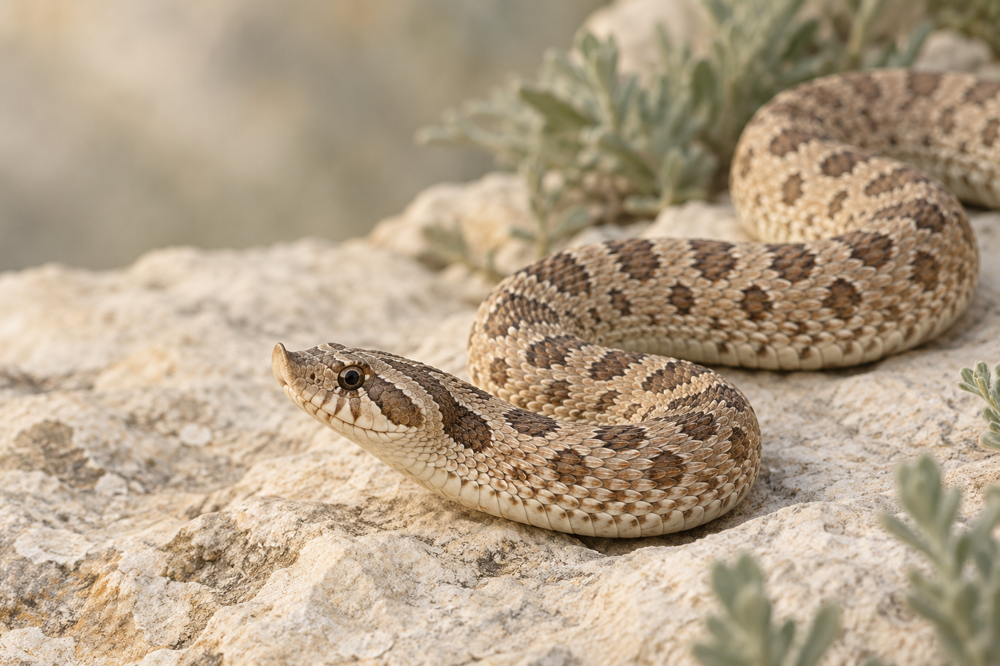

Local image features
Your photo is resized in memory. Color distribution and a small spatial color grid form its visual descriptor.
A provenance-aware review and curation workbench for Western Hognose photos. Organize images, labels, and sources before asking what a model can learn.
Use only a photo you know is a Western Hognose. This tool does not verify species. It compares image similarity and sample support, not genetic probabilities.
Runs in your browser. Your photo is not uploaded or saved.

Filter the historical workbook labels. Blank cells stay unknown; they are never silently changed to negative.
From your supplied Hognose genetics guide. Captions are learning references, not specimen-level genotype evidence or reuse permission.
These openly licensed photos are marked captive by iNaturalist observers. They have no verified morph labels or animal identities and do not enter morph analysis or training.
Each card links to the original observation and the photo's individual license. Multiple photos may show the same unverified individual.
Licensed field observations show natural variation in Western Hognoses. They have no verified morph or genotype labels and are excluded from the morph matcher and training set.
Each photo links to its source and individual license. “Wild type appearance” is not a proven absence of morph genes.
The live photo screen is a browser-side visual matcher. A separate Python/PyTorch pipeline now reproduces the historical CNN and FPPA denoising method; it has not been trained on morph labels.
Your photo is resized in memory. Color distribution and a small spatial color grid form its visual descriptor.
The descriptor is compared with the 21 available course photos. Each displayed percentage is similarity to a nearest tagged photo, not a softmax probability.
Combined trade names are resolved into base traits when the ontology supports them. Sparse or unreviewed labels trigger a limited-evidence result.
The course prototype is a strong starting point; today's materials cannot validate a 17-label multilabel model.
There are only 21 photos. Most labels with positives have just 1–5 examples, too few for a reliable holdout.
The workbook's 0/1 entries have no specimen IDs, breeding records, expert review, or image-rights metadata.
Photos show visible traits; they cannot prove carrier status or a genetic combination. Uncertainty stays an explicit state.
The Python workflow includes a gated MobileNetV3-Small trainer and identity-grouped validation/test evaluation. It has not run because reviewed labels, snake IDs, rights, and an independent test set are missing. No MATLAB checkpoint exists to convert, and morph accuracy remains unverified.
New records stay in this page's memory. Add source, specimen, and review evidence, then export structured JSON.
Preview locally; nothing is uploaded. Export includes images and their source, rights, and label evidence.
Curation guide: Capture a unique specimen ID, photo source and license, breeding/genotype evidence, annotator, and reviewer. Split by individual; augment training data only.
View evaluation plan ↗Instagram breeder leads ↗